橄榄油李子蛋糕橄榄油李子蛋糕
橄榄油李子蛋糕橄榄油李子蛋糕配料
2~4个李子
1个鸡蛋
100克磨碎的杏仁
75克龙舌兰糖浆或枫糖浆
75毫升橄榄油
方法
1. 李子切薄片，将切片切口朝下一片接一片整齐摆在铺好烘焙纸的蛋糕模具里。
2. 把剩下的配料搅拌在一起，轻轻倒在李子切片上面。
3. 将烤箱温度设定为180°C，烤20分钟，或烤至蛋糕定形且呈金黄色。
4. 将烤制好的蛋糕从模具中倒扣出来，这样李子切片就在蛋糕的表面了。
如果你发明过食谱，你就会知道你需要先从一本食谱书，或是互联网上的一个既有食谱着手，然后根据你自己的喜好、一时兴起或过敏症来调整这个食谱。也就是说，你会从一个你熟悉和喜欢的情形入手，看看你能对它做些什么改变，让它变得稍有不同——或者变得更好。
我小的时候对食用色素过敏，因此我的父母出于对我的爱研究出了如何在不使用那些可爱（或可怕）的色彩鲜艳的果冻粉的前提下制作果冻。长大后，我开始跟某个对小麦过敏的人约会，于是我为他发明了很多不含小麦粉的甜点食谱。（相比之下，做不含小麦粉的主菜更容易一些。）再后来，我开始减少糖的摄入量，而我的一些朋友开始避免摄入奶制品……现在，常有人抱怨在给朋友做饭的时候，太多人有各种奇怪的饮食限制，这让做出适合所有人口味的饭菜几乎是不可能的。如果你也面临这样的问题，那么你有这样几个选择：你可以拒绝邀请他们来吃饭，你可以想做什么做什么，彻底忽略他们的饮食喜好，你可以请他们自带食物，或者，你也可以直面挑战，在遵循每个人的饮食限制的前提下，做出适合所有人的食物。
我发明这个橄榄油李子蛋糕的初衷就是做出让来参加聚会的坚持无麸质饮食、无奶制品饮食、无糖饮食以及坚持原始人饮食法的各位朋友都能吃的蛋糕。当时，唯一不能吃这个蛋糕的是一位在那段时间里坚持只吃西葫芦和印度酥油的客人。每个人都表示蛋糕很美味，但当他们问我这种蛋糕叫什么名字的时候，我却回答不出来，因为它并不是传统意义上的“蛋糕”，只能算作一种广义上的蛋糕。它和蛋糕有很多共通之处：它看起来像蛋糕，做起来像蛋糕，扮演蛋糕的角色，但仍然不完全是蛋糕。在一个普通蛋糕不适用的情境里，它解决了我面临的困境。
这就是数学中“推广”（generalisation）这个概念的意义——你从一个你熟悉的情境出发，对其稍加改动，使其可以应用于更多的其他情境。这个概念之所以被称为“推广”是因为它对某个概念的内涵进行了扩充，于是，“蛋糕”这一概念就可以将一些近似蛋糕但并不完全是蛋糕的其他食物囊括在内。这并不等于笼统的陈述，那是这个词的另外一种用法，我们在后文中会再次探讨这个问题。
一个关于推广的例子是我们如何从全等三角形推广到相似三角形的。全等三角形指的是完全一样的两个三角形——它们的内角度数、边长全都相同，也就是说，它们的“形状”和“大小”完全一样，如下图所示：
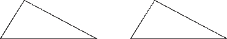
而相似三角形只需要两个三角形“形状”相同即可，并不要求“大小”相同，也就是说，它们的内角度数是一样的，但边长一样这个条件被去掉了。
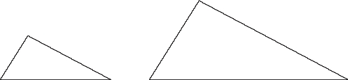
因为我们去掉了一个条件，让规则变得更宽松了，所以现在有更多对三角形符合这个条件，而与此同时，它们仍然有别于随机出现的一对三角形。
通过省略来创造
假设我们希望“证明”这件事：你必须把水烧开，然后才能拿它来泡茶。你也许会试着用未烧开的水来泡茶，然后你可能发现这次的茶很难喝（或者根本喝不出味道），于是你下结论说：是的，你的确需要把水烧开才能泡茶。
或者，你可能希望“证明”这件事：你需要为汽车加汽油才能驱动汽车前进。你试着启动油箱已空的汽车，发现无法启动。于是你下结论说：你的确需要为汽车加汽油才能驱动汽车前进。
在数学里，这种证明方法被称为“反证法”——做与待证结论相反的事，然后证明在这种情况下你会得到完全错误的结果，于是得出待证结论是正确的这一判断。
这里有一个关于反证法的小例子。假设n是一个整数，并且n2是奇数。我们要证明的是：n必须也是奇数。
现在我们假设结论的反面是真的，即假设n2是奇数，但n是偶数。然而，一个偶数乘以一个偶数总会得到偶数，这就会让n2成为偶数。而这与n2为奇数的前提相矛盾。因此，我们之前的假设是错误的。也就是说，原假设中n为奇数的结论一定是真的。
有时，反证法并不能让人满意，因为它并没有解释为什么一件事是真的，它只解释了为什么一件事不可能是假的。我们在后文中会反过来继续探讨这个关于“富有启发性的”和“无启发性的”证明之差别的问题，以及某件事如果不假必然为真这个预设。
一个更有名、更长的反证法案例是关于√2是无理数的证明，即证明√2不能被写成分数a/b（其中a和b为整数）这一形式。你也许知道√2=1.4142135…，并且它的小数位“无限不循环”，这些要素都是无理数的特点，但并不能作为一种证明。以下是我们的证明过程。
证明：我们假设待证结论为假，因此我们假设存在两个整数a和b使得√2＝a/b。关键在于，我们在这里需要同时假设这个分数是最简分数，也就是分子和分母没有除1以外的公因数使得该分数可以被约简。
现在我们分别把等式两边取平方，得到：
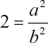
所以
2b2=a2
目前为止，一切看起来简单明了。现在我们知道的是，a2是某个数字的两倍，也就是说它是一个偶数。因此a必须也是偶数，因为我们刚刚证明过，如果a是奇数，则a2也是奇数。
那么，a是偶数意味着什么呢？意味着它可以被2整除，也就是说a/2仍然是一个整数。所以我们可以说：
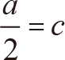
所以
a=2c
现在把上面这个等式代入之前的等式，得到：
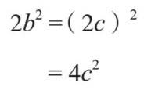
所以
b2=2c2
现在我们可以用之前证明a为偶数的方法来证明b也为偶数。从上面这个等式中，我们可以看出b2是某个数字的两倍，所以它是一个偶数，也就是说b一定是偶数。
现在我们发现a和b都是偶数。但我们在最开始假设了a/b是一个最简分数，也就是说a和b不能都是偶数。如此，我们就发现了一个矛盾。
所以我们一开始的假设，√2=a/b是错的，也即√2不能被写成分数的形式，因此它是一个无理数。
反证法是一种非常有效率的证明方法，当数学家无法直接证明一个结论为真的时候，他们可能会将反证法作为万不得已的最后手段——证明待证结论不可能是假的。有时，反证法可能并不能达成你期待的效果。比如，也许你尝试证明做巧克力蛋糕必须用到面粉。于是你试着做了一个不含面粉的巧克力蛋糕，结果你发现味道也不错。实际上，你所做的事情是发明了一种全新的蛋糕：无面粉巧克力蛋糕，而这种蛋糕目前在许多高档餐厅十分流行。
酵母和面包的关系也是如此。你也许希望证明做面包必须用到酵母。于是你尝试着做了不加酵母的面包，从而意外“发明”了无酵饼。
类似的事情在数学里也会发生——一开始，你希望证明的是某件事是不可能的，最后却意外地发现它其实是可能的，虽然你得到的结果可能与待证结论稍有不同。这是推广的一种可能的方式，几乎完全出于偶然。符合此描述的最重要的一个例子发生在几何学领域，与平行线有关。
欧几里得的天才
在很久以前，欧几里得就尝试着总结出了几何学的规则。他的初衷是确定几何学的公理，即列出一张包含所有关于几何学的事实都可以据此推导出来的基本规则的简短清单。这些基本规则应该是一些最基本的事实，你无法想象它们可以由任何其他的事物推导出来——它们的真不证自明。
不管怎样，欧几里得最终想出了4条非常简单而直观的规则，以及一条复杂到令人恼火的规则：
1. 经过任意相异两点有且只有一条直线。
2. 将一条线段延长为无限长的直线有且只有一种方法。
3. 对于确定的圆心和半径有且只有一个圆。
4. 所有的直角都相等。
这些听起来都很直观，不是吗？再看看第五条：
5. 只要足够长，任意三条直线总会构成一个三角形，除非它们彼此垂直。
最后一条规则的意思是，如果三条直线彼此垂直的话，其中两条就是平行线，那么不管它们有多长，它们都不会相交。
这就是为什么第五条规则也被称为“平行公设”，虽然它实际上并没有直接提及平行线这个概念。第五条规则也告诉了我们，三角形的三个内角之和总是180°。
第五条规则听起来比其他几条复杂很多，因而几百年来，很多人试图证明它是一条多余的规则，也即它可以由其他四条规则推导出来。大家都认同这条规则是正确的，唯一的分歧在于它是否需要这样被强调，是不是有了其他的规则，我们自然就能推导出这条规则，而不必特意多说一遍。
为了证明这个判断，人们来回地兜圈子。偶尔，他们觉得自己已经用前四条规则推导出了第五条规则，但事实上他们总是在证明的过程中不小心用到了一些对他们而言不证自明，但实质上只不过是将第五条规则微妙地转换了形式的几何假设。所以，他们所做的不过是用第五条规则自身来证明第五条规则，算不上是多么石破天惊的发现。
最后，大家决定用反证法来证明它。也就是说，他们先假设前四条规则是真的，最后一条是假的，然后尝试着在证明过程中发现矛盾。
有趣的事发生了，就像无面粉巧克力蛋糕一样，证明过程中矛盾没有出现，反而是一种新的不同的结论被发现了——他们发明了一种几何学的新形式。
我们现在已经知道有两类几何情形不遵循平行公设。其中一种是球状物体的表面，比如球面或橄榄球表面，在该表面上，三角形内角之和大于180°。这种新的几何学形式也被称作椭圆几何。
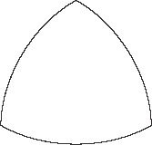
另一种情况是向内凹陷的曲状表面。在该表面上，三角形内角之和小于180°。这种新的几何学形式也被称作双曲几何。
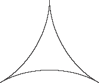
而最原始的平行公设成立于表面为平直表面的情形，这种数学情形就被称作欧几里得几何。
对“距离”概念的推广
在英语中，我们常用“像乌鸦一样飞”这个短语来表示走直线，但当你真的去旅行的时候，你就会发现走直线几乎是不可能的。因此，从A地到B地的距离通常取决于你准备怎么走。并且，这种选择也会影响距离远近对你的重要性。
如果你准备坐火车前往目的地的话，你通常会在起点买好票，而且也不用考虑火车具体走了多远的距离这个问题。但如果你准备坐出租车前往目的地的话，你就会很在意整个路程到底有多远。要注意，我们讨论的不是两地间的直线距离，而是“出租车行驶的距离”。这件事会受到很多因素的影响，比如出租车司机会不会绕远。对此，我们最好假定出租车司机是诚实的，选择了最佳路线，就像我们假定乌鸦会飞直线而不会为了看风景绕路一样。但两者的主要区别在于，在当前这种情况下，出租车行进的距离还取决于一些额外的因素，比如是否经过单行道等，因此，适用于直线距离的原则就不再适用于出租车出行了。（也许有一天我们能发明出会飞的、可以走直线的出租车，但据我所知，目前我们还做不到。）
举个例子，对于乌鸦来说，从A到B的距离等于从B到A的距离。但对于出租车而言，情况就未必如此了。比如，你坐出租车从单行道的一端开到另一端，就比你从另一端绕路回到这一端的距离要短很多。
如果我在谷歌地图上查从谢菲尔德火车站到谢菲尔德市政厅的路线的话，我会得到这样的结果：
坐汽车从火车站到市政厅1.4英里
坐汽车从市政厅到火车站0.9英里
直线距离0.5英里
对于像伦敦这样的城市，人们很难计算出在乘坐出租车的情况下从A地到B地的距离，因为这类城市的单行道系统很复杂，道路曲折，而且你往往会因为担心出租车的费用过于昂贵而无法专心计算距离。所以我们这里以芝加哥为例，芝加哥的出租车行驶距离要容易计算得多，原因有如下几个：
1. 芝加哥的道路系统是网格状的，其道路又长又直，且彼此垂直。这是最主要的原因。
2. 芝加哥的门牌号是以距离命名的，所以“5734号南”（芝加哥大学数学系的门牌号）就表示这个地址在0号以南多远，而不是说它是南面的第5734栋楼。我第一次知道这件事时惊叹极了。在已知每800号等于1英里的前提下，计算出租车需要行驶的距离就相对容易许多了。
3. 芝加哥的单行道系统比较合理，所以通常而言你不太需要绕路，只要你对这个系统足够熟悉，能在适当的时候转弯即可。
4. 芝加哥的出租车价格比伦敦便宜很多，所以我不会因为担心费用昂贵而烦躁不安。
除了因为担心费用昂贵而心情烦躁以外，以上情形对于出租车和其他交通工具而言都是适用的。但我之所以拿芝加哥的出租车为例，是因为这是一个真实存在的数学概念，叫作“出租车几何”（taxicab metric）。也许是因为此类问题的确是数学家会在乘坐出租车时思考的问题吧，当他们使用其他的交通工具时，他们可能会更关注交通情况。我们正是通过探讨距离一类的概念应该具备哪些特质，才逐渐建立起度量这个概念的。
当然，芝加哥的道路系统并不是一个严格意义上的网格状系统，它还包括以对角线形式穿越整个网格系统的大型高速公路。但我们现在暂且不考虑对角线公路这一细节。我们会在下文中看到，丢掉一部分会带来麻烦的细节就是一种“理想化”，这对数学而言是一个很重要的环节。这件事可能会让人感到沮丧（毕竟对角线形式的高速公路是真实存在的），但这种做法的目的是理解某些事物的运作原理，而非建立一个精确的模型。我们现在的目标是解释清楚“距离”这个概念。既然我们已经把芝加哥变成一个出租车行驶方便的、道路彼此垂直的“理想化的网格体系”，那么从A地到B地的出租车行驶距离就可以简化为：
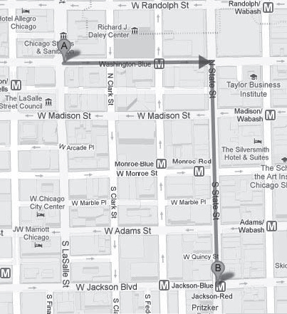
也就是说，无论出租车司机选取了怎样的路线，其整个行驶距离也不可能短于先一路横着开，再一路竖着开的行驶距离。即使我们在不同的路口转弯，比如像这样：
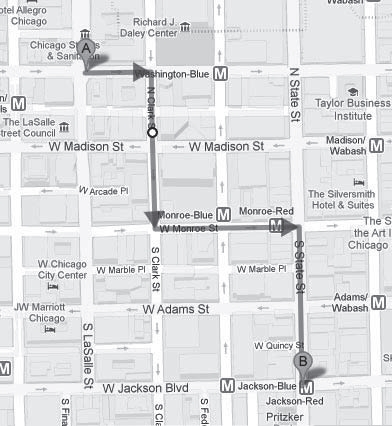
整个行驶距离还是一样，因为我们不考虑转弯的时间。然而，如果我们以一种完全不合理的方式在中途来回转弯，那么整个行驶距离就会变长，比如像这样：
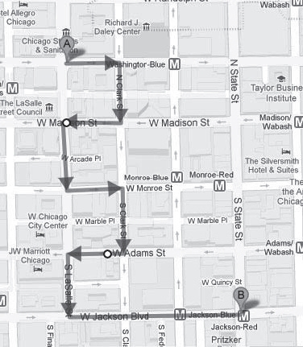
如果你还记得毕达哥拉斯定理的话，你也许会记得它告诉了我们如何计算一个直角三角形的斜边长度。在我们这个例子里，计算斜边的长度就相当于计算两地之间的直线距离。
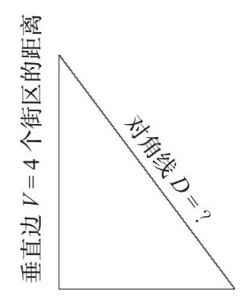
毕达哥拉斯定理是这么说的：
斜边的平方等于两个直角边的平方之和。
将该定理应用于上图这个例子，则：
D2=V2+H2
如此，我们就可以算出斜边，也就是两地间的直线距离D：
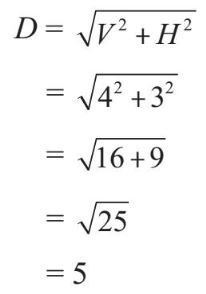
换句话说，乌鸦只需要飞5个街区的距离就可以从A地到达B地。而出租车需要行驶的水平距离加上垂直距离是：
出租车距离=V+H
=4+3
=7
也即出租车需要行驶7个街区的距离。乌鸦知道沿对角线飞距离更短。但对于出租车来说，即便我们沿着对角线的方向行驶也不会更快到达目的地，因为我们还是要沿着横向和纵向的道路交替前进，而这些距离加起来与先一路横着开，再一路竖着开的总距离是一样的，甚至更糟：因为我们要拐更多的弯。
即便如此，出租车的行驶距离仍然是一个很合适阐述“距离”概念的情境，而且也是一个很好的关于推广的例子。我们又一次从我们熟悉和喜欢的概念出发，延伸出了其他一些类似的但又略有不同的概念。那么，还有什么其他的事物符合“距离”这个定义呢？这个理想化的出租车行驶距离符合直线距离的两条规则。
• 当A和B是同一地点时，从A到B的距离为零，并且这是距离为零的唯一可能的存在形式。
• 从A到B的距离等于从B到A的距离。
还有第三条规则。这条规则与毕达哥拉斯三角形有关，它说的是：如果你想从A地到B地去，并且中间需要经过任意点C，那么这段距离永远不可能短于A与B之间的直线距离。通常，经过点C会让距离变长，如下所示：
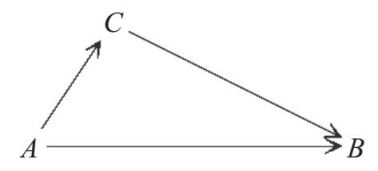
而在最佳情况下，C点位于从A到B的直线路程，此时从A到B的直线距离与从A到B且经过C的距离就是相同的。
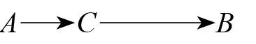
（当然，你大概很难给你的出租车司机解释这些。）这个关于中途经过某地的情形在数学中被称为“三角不等式”，因为它与三角形的三边关系有关。这一次，这个三角形不再必须是一个直角三角形了。该规则看起来就像是毕达哥拉斯定理的一个弱化版本。
毕达哥拉斯：是的！如果我们有一个直角三角形且已知其中两边的边长，我们就能精确计算出该直角三角形第三边的长度！
三角形不等式：呃，如果我们有一个非直角三角形的话，我们就知道“在最坏的情况下”第三边的长度等于另外两边之和。
这里所谓“最坏的情况”指的是“最长距离”（因为我们讨论的情境是出租车行驶距离），也就是说，如果三角形的三边分别是x、y和z的话，那么x最大可以是y+z。你可以想象在这种情况下，我们会得到一个极其平扁、细长的三角形，其中y边和z边将三角形向两边撑开，因此x边必须非常长才能与它们连接上。就像这样：
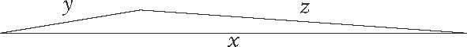
现在，让我们想象三角形的边是三个地点A、B和C之间的距离，这样我们就可以得到前面介绍的“中途经过点”的规则了。
就我个人而言，这个三角不等式有两点很有意思。第一点是，出租车行驶距离也遵循这个规则。第二个是，有一种非常常见的“距离”概念的实际应用情形并不遵循这个规则。第二点常常让我感到沮丧，这个情形就是火车票。
对“距离”概念的继续推广
如果你在英国坐过很多次火车，你就会明白我的意思。有时候，当你想坐火车从A地去B地的时候，你会很气愤地发现，买两张先前往某个中间地点、再前往最终目的地的单程票的价格要低于买一张从A地到B地的直达火车票的价格。更让人觉得愚蠢的是，有时你甚至不需要另选一条路线，前往某个你本来不需要去的中间地点——你只需要把本来的行程分成两段，甚至不需要中间下车，就可以用更少的钱到达目的地。注意，这里我们讨论的不是A地到B地的距离，而是这段路程的票价。在一个理性的世界里，火车票价格应该遵循三角不等式——在从A地到B地的路途中经过另一地点C的行程票价不会低于直接从A地到B地的行程票价。但在实际生活中，它并不遵循这个规则，或者至少存在不遵循此规则的可能性。
以从谢菲尔德到卡地夫为例。买一张从谢菲尔德到伯明翰的火车票和一张从伯明翰到卡地夫的火车票的总价格，要比直接买一张从谢菲尔德到卡地夫的火车票便宜。
而以从谢菲尔德到盖特威克为例的话，那么买一张从谢菲尔德到伦敦的火车票和一张从伦敦到盖特威克的火车票的总价格，要比直接买一张从谢菲尔德到盖特威克的火车票便宜。
或者，以从谢菲尔德到布里斯托为例的话，买一张从谢菲尔德到切尔滕纳姆的火车票和一张从切尔滕纳姆到布里斯托的火车票的总价格，要比直接买一张从谢菲尔德到布里斯托的火车票便宜。
除此以外，英国的火车票票价还有一些其他的奇怪现象，比如：
• 有时，头等舱比经济舱更便宜。
• 有时，行程越远反而越便宜，比如从伦敦到伊利要比从伦敦到剑桥的车票价格便宜，而剑桥实际上是从伦敦前往伊利途中的一站。
• 有时，可全天使用的通票（可以在一天内的任何时候使用）反而比只能在非高峰时段使用的通票更便宜。
后面几个现象很难用之前我们提到的关于距离的三条规则来解释，因为它们更多受到价格和距离的关系或价格和时间的关系的影响，所以在这里我们暂且不去讨论它们。在数学中，我们通常会优先处理简单一些的问题，这并不是因为数学家都是胆小鬼，而是因为复杂的问题通常建立在简单问题的基础之上，所以我们必须先解决简单的问题。
为了明白这些规则为什么起作用，看看它们在什么情形下不起作用会很有帮助。为什么人们不能在地铁上吸烟？因为会引起混乱。为什么人们不能在地铁站吸烟？因为会造成火灾，带来人员伤亡。这就像我们试图理解事物背后的原理，而不只是记住这些规则或盲从食谱一样。
现在，我们的三条关于距离的规则如下。
• 当A和B是同一个地点时，从A到B的距离为零。这也是从A到B距离为零的唯一可能的存在形式。
• 从A到B的距离等于从B到A的距离。
• 从A到B途径C的距离不可能短于从A到B的直线距离。
以上就是我们总结出的一些关于距离的公理，而现在，我们要做人们在规则面前通常忍不住要做的事：试着打破规则。在数学里，打破规则的目的不是标榜叛逆，而是检验这个规则的有效性和应用边界。
我们已经看到了打破规则三（火车票）和规则二（单行道）的两个关于距离的实际案例，那么规则一呢？也许你认为打破规则一的实际案例是不存在的，但它的确存在。
对“距离”概念的进一步推广
全球卫星定位系统（GPS）是一种神奇的技术。它的出现让我比以往更少迷路了，尤其是在坐公交车的时候，因为我可以在车上通过实时更新位置信息的手机地图跟踪自己的定位，然后奇迹般地在正确的站下车。
GPS也让网络约会变得快捷许多。在原先的慢速模式里，你可以通过对方公开的文字信息知道其是否与你在同一个城市，或者是否在你方圆100英里 或200英里以内。而有了GPS以后，你可以直接看到对方此刻距你多少米远。我曾经看到过我的朋友在酒吧里使用手机约会软件（当然，只是为了好玩……），我切身感受到了看到某个你心仪的约会对象距离你很近，并且越来越近时的那种激动。“看，这个人距离我只有200米远……150米……50米——等等，难道他已经和我在同一个地方了？”
或200英里以内。而有了GPS以后，你可以直接看到对方此刻距你多少米远。我曾经看到过我的朋友在酒吧里使用手机约会软件（当然，只是为了好玩……），我切身感受到了看到某个你心仪的约会对象距离你很近，并且越来越近时的那种激动。“看，这个人距离我只有200米远……150米……50米——等等，难道他已经和我在同一个地方了？”
然而，GPS显示的距离也可能与实际不符，因为它是根据卫星定位系统进行计算的，并没有考虑到你所在的位置距离地面的高度。我的一个朋友曾独自一人在酒店的房间里待着，然后很困惑地看到有很多有趣的聚会正在距离他“0米远”的地方举行。“可是，”他抱怨说，“我还是一个人待在酒店的房间里啊。”
这也是一个关于距离的实际案例，而且它并不遵循规则一——当且仅当你与某人处在同一地点时，你与其距离为零。这个情境还有一些比网络约会更有意义的应用实例。比如，如果你遇到的与距离有关的问题并不是从A地走到B地，而是把某物从A地运到B地所需的能量呢？这样一来，如果A地就在B地的正上方，那么你就可以直接把东西扔下去，因而把东西从A地搬到B地所需要的能量就为0，尽管A地和B地并不是同一个地点。
在数学里，关于距离的问题被称为度量问题。对于此类问题，还有一条无须言明的规则是：从A地到B地的距离不可能为负。然而，在某些情况下，甚至连这条规则都可能不再成立，比如，我们希望计算把东西从A地运到B地需要多少钱。而在现实中，你不但可能不需要自己出钱，甚至可能会有人付钱给你请你做这件事。欧洲商人会付钱给哥斯达黎加的咖啡农，请他们把他们的咖啡运到欧洲，然后从中提炼咖啡因。对于能量饮料的制造而言，这种原料十分宝贵。
在数学中，考虑违背一条或几条关于度量的规则的情况，是一种对距离这个概念进行推广的有效方法。另一种方法则是将推广和抽象结合起来，该方法将引入“拓扑学”，这是我们本章后文会讨论的问题。
通过增加维度来推广
我们刚刚已经看到，借助GPS技术实现网络约会的问题在于，GPS假设我们身处于一个二维世界。这种假设对于开车找路是有帮助的，但对于在摩天大楼里寻找潜在约会对象就不那么有帮助了，因为在这种情况下，第三个维度很重要。
增加维度是数学推广的一种重要形式。有一个笑话是这么说的，如果你参加了一个数学研讨会，那么即便你什么也没听懂，你也可以提出一个听起来很像模像样的问题：“这可以推广到更高的维度吗？”。
球面是圆形在更高维度上的推广，当然前提是你要用正确的方式看待圆形。让我们来想一想我们是怎么用圆规画圆的（虽然现在我们通常会直接借助电脑上的“画圆”程序来画）。首先，你要选择某个尺寸作为圆的半径，比如5厘米。然后，你需要将圆规一脚固定于圆的中心点位置，用活动的另一脚画出所有距离中心点5厘米的点。
现在假设你有一只可以在空中画图的笔（这是我一直梦想拥有的）。将这支笔作为圆规的一脚，然后用它来画出距离某个中心点5厘米的所有方向的点。你就得到了一个球面。
数学家们很乐意就此把这个概念推广至四维、五维甚至更高维度的空间，虽然我们很可能并不知道更高维度的空间本身究竟意味着什么。根据这个概念的定义本身，一个四维空间中的半径为5厘米的球面就是“那个空间里所有距一个固定点的距离为5厘米的点”。因为这只是一个概念，而不是一个实物，所以我们知不知道它看起来是什么样子的并不重要。重要的只是这个概念本身是合理的。不过，对于一个概念而言，在某个方向上的推广是合理的并不意味着就不存在其他合理的推广方向了。
关于圆的不同推广
想象一个甜甜圈，一个环形的甜甜圈，如下图所示。
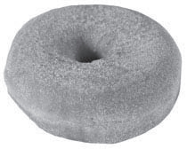
当数学家们说“甜甜圈”的时候，他们指的都是环形的甜甜圈——至少在他们讨论数学的时候是这样。也许他们该改口称其为“贝果面包”或面包圈。
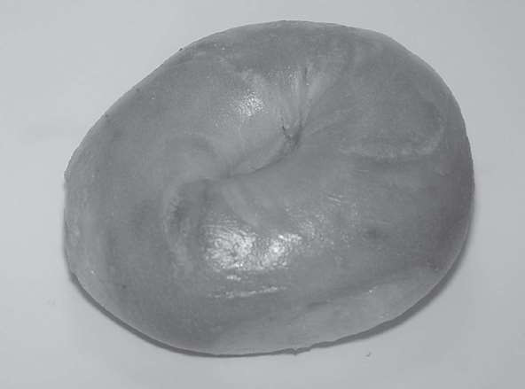
你可以怎样推广甜甜圈这个概念呢？最直接的办法是给它更多的洞，比如有两个洞的甜甜圈。
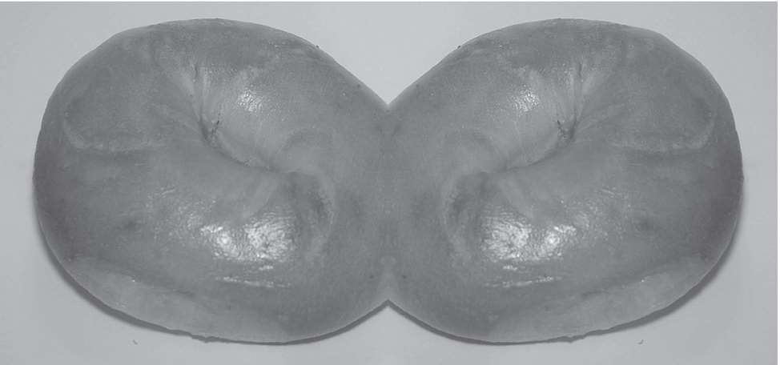
但我们还有另外一种推广的方式。在使用这种方式时，我们需要更仔细地看待我们的甜甜圈。当数学家们思考甜甜圈的时候，他们通常只是在讨论甜甜圈的表面，而不是实心的甜甜圈。类似地，当他们说“球”的时候通常指的只是球面，就像只考虑橙子的表皮而非整个橙子。一个球面就像一个气球，它的内部是空的。
甜甜圈也是如此。想象一下用魔法把一卷卫生纸转化为一个可随意拉伸的橡胶材质的圆筒，然后把它弯成一个圆圆的环。或者，想象一下把一个彩虹圈弯成一个圆，头尾相接，如下图所示。它看起来和一个环形甜甜圈很像，只不过它是中空的。
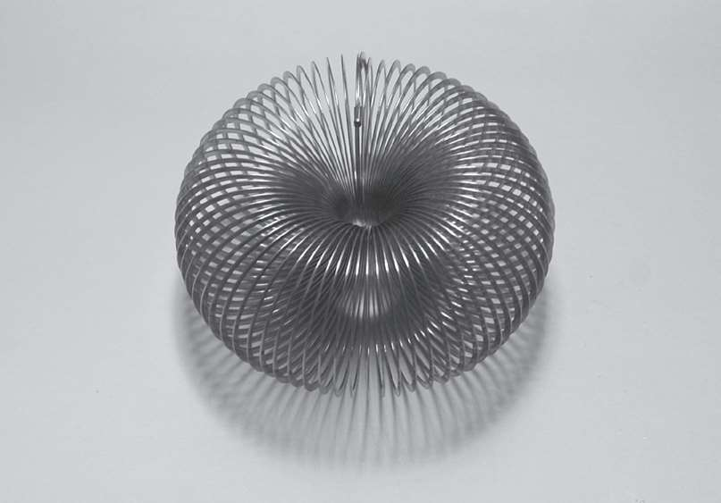
它的数学名称叫作“环面”（torus）。
现在让我们回顾一下我们是如何把一卷卫生纸变成一个环面的。或者，你也可以想象用泡泡制作一个类似的形状：用一个沾着足够多泡泡液的大的泡泡棒在空气中拖出一个大泡泡——不是用嘴吹，而是边走边拖泡泡棒，在绕了一个圈之后，这个泡泡环就能头尾相接了。它的样子看起来就像一个大型甜甜圈——一个空心的甜甜圈，一个空心的泡泡甜甜圈。
我们通过在空中以圆形轨迹拖泡泡棒得到了这个环面，这也说明环面是圆形的一种推广——我们所做的不过是改用泡泡棒而非画笔在空中画圆。现在，进一步对环面这个概念进行推广可能就会变得有些奇怪了。想象一下拖着一整个甜甜圈在空中画出圆的轨迹。你很难想象它的样子，因为它并不适合三维空间，但至少你大概可以想象得到它绝对不是一个两个洞的甜甜圈。
另一种推广方式
“英国总是下雨。”
“火车从不准时。”
“看歌剧很贵。”
“你总是那么说。”
这些都是概括性陈述的例子，也属于推广的一类。不过，这种推广方式与你把一个普通甜甜圈变成一个有两个洞的甜甜圈不同。这种推广更多的不是放宽一些条件让更多的符合者进来，而是暂时忽略一些没那么重要的因素，聚焦于核心属性。
当然，这些概括性陈述并不是完全正确的：火车偶尔也会准时；英国总有不下雨的时候；你可以很容易在伦敦买到10英镑以下的歌剧票；你也不是“总是那么说”（不管那具体是什么），只是在特定情况下才会那样说。问题是，这些例外重要吗？我们主要研究的是例外情况还是通常情况下的行为？
答案是，我们两者都研究。我们不可能只研究一个而不管另一个。从例外情况中，我们可以学到很多有趣的东西，即使那些例外情况很罕见，并且没那么有代表性。而如果我们不研究常规情况，我们又如何知道某种情况是反常的呢？这就需要我们暂时忽略特殊情况了。
拓扑学入门
结合我们之前关于距离问题和甜甜圈的讨论，我们便来到了数学的一个名叫“拓扑学”的分支，它研究的是事物的形状。我们已经讨论过多种关于距离概念的推广方式，由此我们得到了很多类似距离，但又并不完全符合距离概念的所有规则的事物。
现在，我们可以更进一步推广这个概念了，因为有时候我们并不关心两个事物的距离究竟有多远，而只想知道我们能不能从一地去到另一地，以及怎么去。如果你住在英格兰南面的话，怀特岛也许离你比苏格兰更近，但事实上你并不能直接开车过去——这完全是另外一种麻烦。
同样的问题在城市街区也是存在的。比如在芝加哥这样的城市里，你可能突然就从一个街区来到了另一个街区，虽然实际上你只过了一条马路——整个路程很短，但你已经来到了一个不同的街区。
不关心距离也就意味着不关心尺寸，就像相似三角形一样，以下这些圆形也可被视为“相同”：
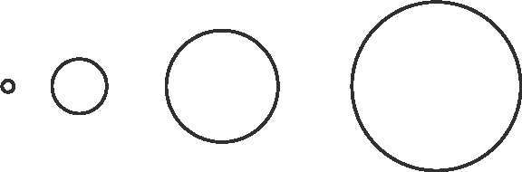
另外一个我们并不太关心的问题是曲率。所以下面这两个形状也可被视为“相同”：
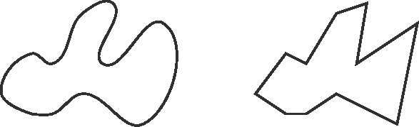
我们现在只关心一个东西有多少个洞。所以在我们现在讨论的体系里，不仅所有的三角形是“相同”的，而且三角形和正方形、圆形也是“相同”的：他们都属于只有一个洞的形状。相比之下，数字8则属于完全不同的另一种形状，因为它有两个洞。
思考这个问题的一种方法是想象所有东西都是用橡皮泥做的：想象一下你能否将一个形状捏成另一个形状，同时保证不制造出新的洞，也不需要将其他的形状粘在它上面。
问题：字母表里的哪些大写字母在这个形状可塑的情境下是“相同”的？
• 没有洞的字母：C E F G H I J K L M N S T U V W X Y Z。
• 有一个洞的字母：A D O P Q R。
• 唯一一个有两个洞的字母：B。
这说明，从拓扑学的角度讲，大部分字母都是一样的。这也正是电脑很难识别手写字母的原因之一。
我们也可以尝试在更高的维度讨论这个问题。想象一下我们用一团橡皮泥做出一个甜甜圈。我们有两种制作方法：你可以先捏出一个香肠的形状，然后把它的头尾相连，也可以在揉成一团的橡皮泥中间戳一个洞。不管使用哪种方法，你的做法都证明了从拓扑学的角度来看，甜甜圈和一团橡皮泥是不同的。而当你做好了甜甜圈以后，你不必戳新的洞也不必粘上另一块橡皮泥就可以用它做出一个咖啡杯。甜甜圈的洞可以被视为咖啡杯把手与杯身之间的那个洞，你只需要把实心的部分捏出凹面做成杯肚的形状，咖啡杯就做成了。也就是说：
从拓扑学的角度讲，甜甜圈和咖啡杯是一样的。
而与此相对，我们之前提到的“两个洞的甜甜圈”则与一个洞的甜甜圈或者咖啡杯完全不同。关于事物在拓扑学上的异同这个问题有很多应用。比如，之前我们讨论过关于绳结的数学，而绳结是拓扑学研究的一类对象。在借助拓扑学研究绳结的过程中，一个很奇妙的思考方式就是，你并不是在空白的纸上用彩色画笔画画，而是先用彩色画笔涂满一整张纸，然后擦掉你想擦的部分，以此完成一张主体部分为白色而背景为彩色的画。现在，让我们想象一下在三维空间里进行这样的创作。
想象一下你拿着一支“可以在空中画画的彩色笔”，你将一个盒子的内部空间填满了颜色。然后，你又拿出一个“可以在空中使用的橡皮擦”，用它在你刚才填色的部分擦出一个绳结的形状。现在，整个空间剩下的彩色部分就是一个几乎无法想象，却很容易用数学方法进行研究的形状。
我们刚才描述的那种在三维空间里去掉某物的过程叫作取“补集”。一旦我们完成了这个过程，我们就可以像捏橡皮泥一样任意改变剩下那部分的形状，前提是不增加洞的数量或者粘上另一块橡皮泥。你能想象出下面这些形状的补集吗？
• 一个圆圈○在拓扑学上的补集与一个空心的、内部中央只撑了一根短棍的球面相同：
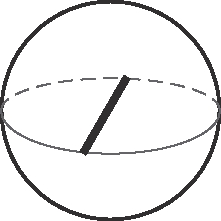
• 两个扣在一起的圆圈（如下图左边所示）的补集在拓扑学上与一个空心的、内部只有一个环面的球面（如下图右边所示）相同：
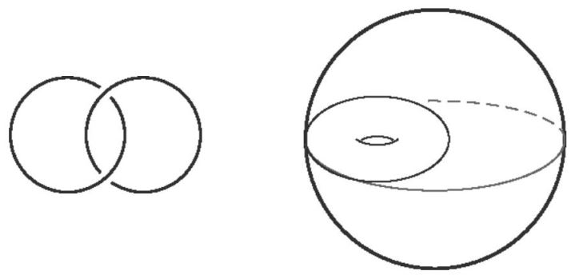
这还是一些很简单的形状，但是已经很难直观地想象出来了。数学的强大之处就在于它使得我们不需要真正将某个概念想象成实物就可以对问题进行严谨的研究。
另外一个例子是关于用纸剪下某个平面形状然后将它们粘成一个三维的图形。你也许还记得如何用一张纸折成一个正方体：
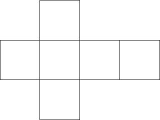
如果你将这个形状沿着外围轮廓剪下来，然后沿各条线折叠，你就可以把重合的边粘起来得到一个正方体。或者，你也可以试试将下面这个图形折成三维图形：
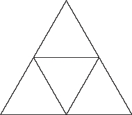
你会得到一个三角形的金字塔，它的数学名称叫作“四面体”。
现在，请想象一下用可以任意塑形的橡皮泥片代替纸做同样的事情。这样一来，我们就可以用下图所示的正方形橡皮泥片制作甜甜圈（环面）了——我们要确保把标为A的边都粘在一起，使箭头的方向保持一致，对于标为B的边也进行一样的操作：
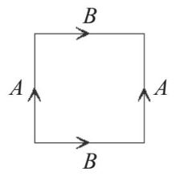
你完成了吗？接下来是真正的挑战。遵循刚刚的操作规则，即将字母相同的边粘起来且确保箭头方向一致，你能想象出用下面这个八边形橡皮泥片折成的立体图形会是什么形状吗？
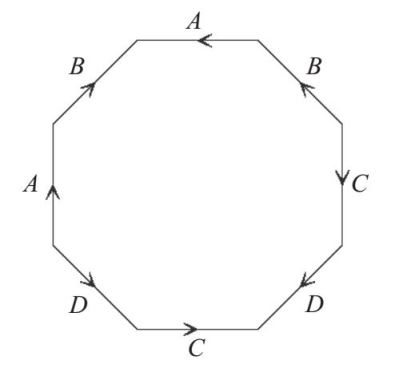
答案是：有两个洞的甜甜圈。
现在，你可以将此推广至有更多洞的甜甜圈——试图凭大脑想象出最终的图形是很难的，但拓扑学给了我们一种可以严谨地研究这些关于比我们能够想象出的图形复杂得多的图形的问题的方法。
下面这些形状有什么共性？
正方形、梯形、菱形、四边形、平行四边形
答案是它们都有四条边。你能把它们按照概括性程度的高低依次排列吗？从前一个图形到后一个图形，推广的方式又是怎样的？
按照概括性从低到高，图形正确的排列顺序是：
正方形、菱形、平行四边形、梯形、四边形
推广过程是这样的：
• 正方形的四条边相等，四个内角也相等。
• 菱形的四条边相等，所以从正方形到菱形的推广过程是允许四个内角的度数不同。不过，相对的两个内角度数必须相等，因为四条边的长度相等。
• 平行四边形类似菱形，但只要求相对的两组边的边长相等。从菱形到平行四边形的推广不涉及内角的条件，相对的两个角的度数仍然必须相等。值得注意的是，相对的边边长相等就是因为相对的角度数相等。
• 梯形的唯一要求是有两条相对的边平行，没有关于边长的限制或者角的限制，它们可以都不相同。
• 四边形是有四条边的任意图形。在这里，我们进一步去掉了有两条相对的边平行这个条件。
在这个例子里，我们看到推广的每一步都是去掉了前一个图形定义中的一个限定条件，使得更多的图形符合新的定义。适当放宽条件是数学推广的一种常见方式。
你也许注意到了，在这个过程中，还有一步可能发生的推广，即从正方形推广至长方形。长方形是正方形的另一种方式的推广——菱形的四条边相等，但四个内角可能不等，而长方形的四个内角相同，但四条边可能不同。当我们对所有条件逐一放宽时，我们就得到了推广的不同方式。推广不是一个自动化的过程。推广总是有不同的可能性，而推广的结果并不完全取决于推广的程度，它也取决于推广的方向，即你看待某个概念的角度。这就是为什么数学是一个以不断增长的速度发展的学科，因为每一次推广都带来了更多其他的推广。
1英里≈1609.344米。——编者注